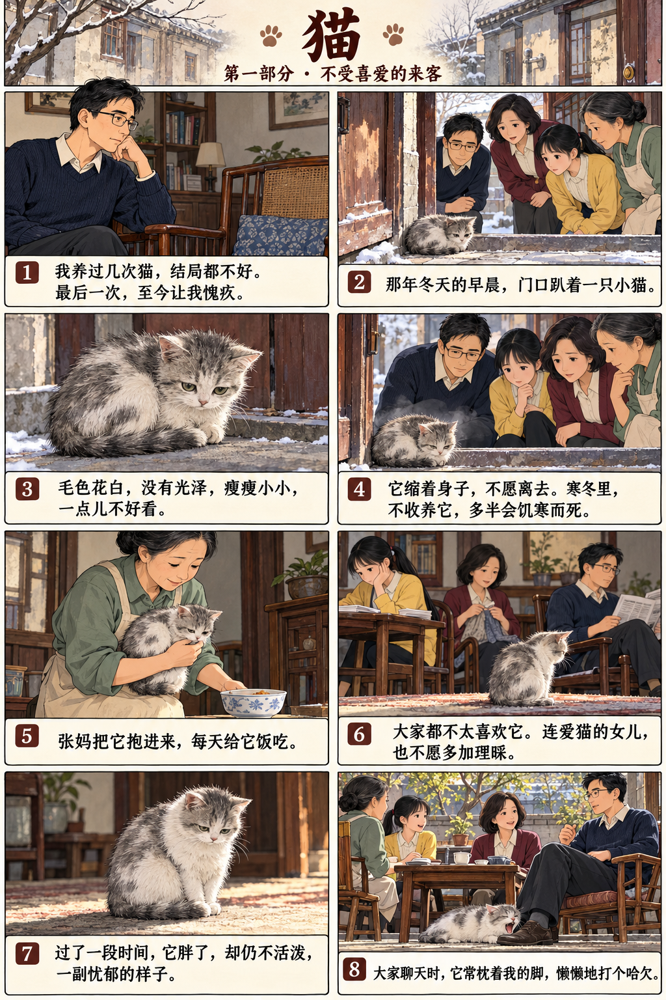
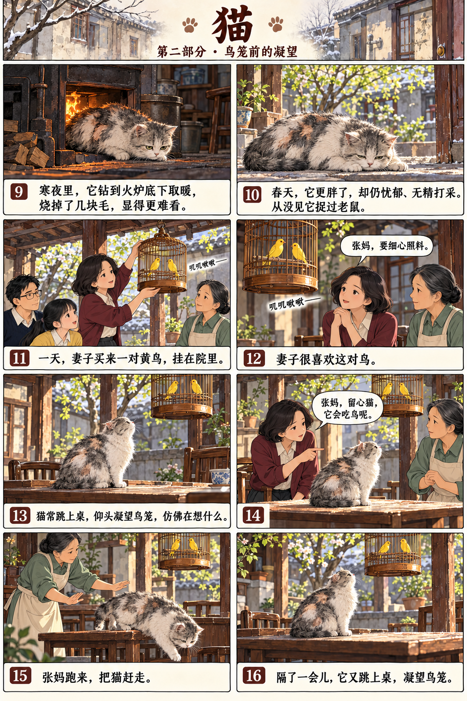
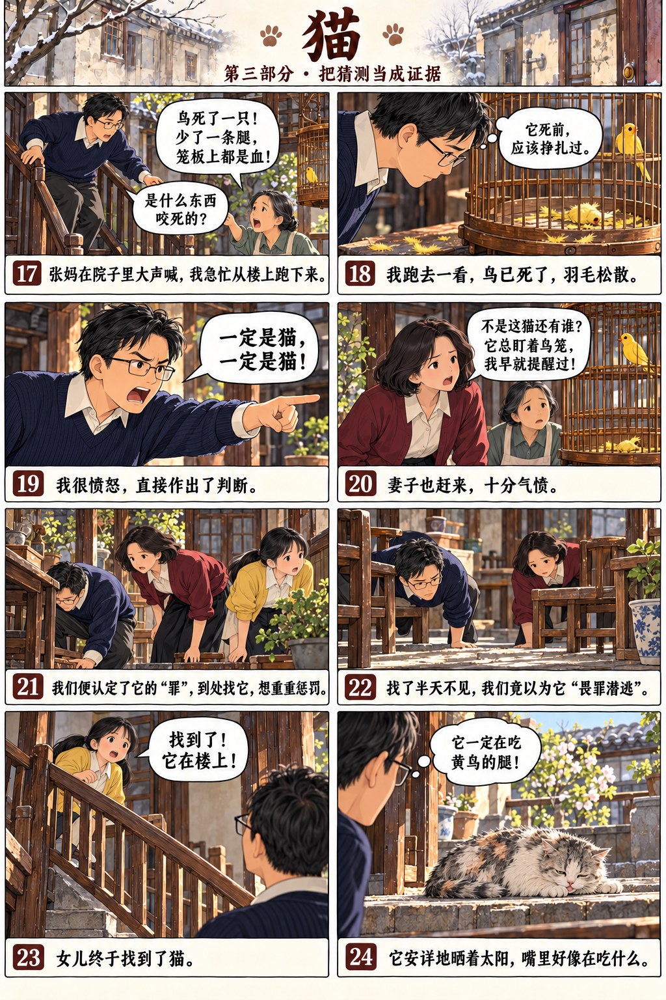
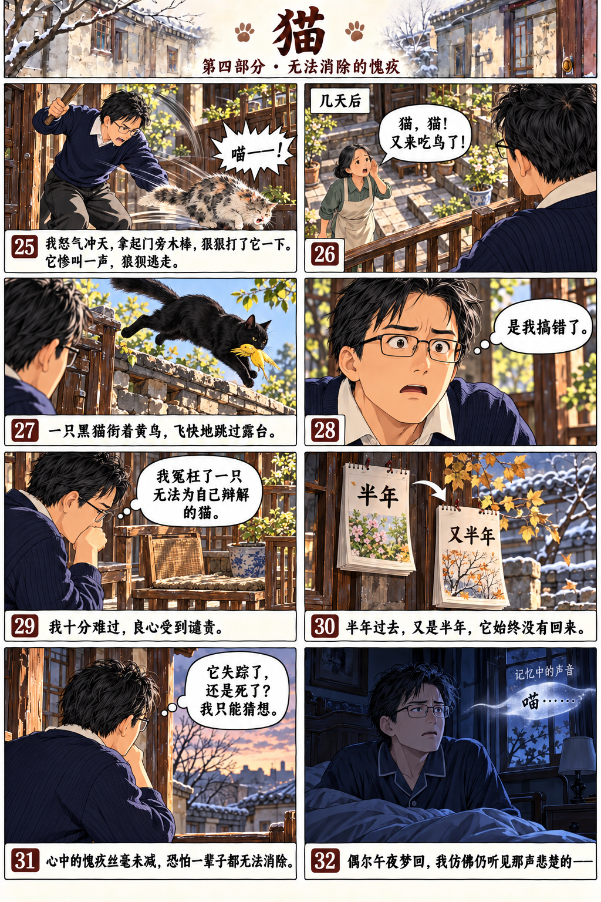

课文主页 / 漫画回读
猫








第1段
我养过几次猫，结局都不好，尤其是最后一次，让我至今想起仍愧疚不已。
第2段
那年冬天的一个早晨，家人发现门口趴着一只小猫。它毛色花白，没有光泽，瘦瘦小小的，一点儿都不好看。小猫缩着身子，不愿离去。时值寒冬，我们如不收养，它多半会因饥寒而死去。家里的帮佣张妈把它抱了进来，每天给它饭吃，不过大家都不太喜欢它。它不活泼，一副忧郁的样子。连女儿那样爱猫的人，对它也不愿多加理睬。
第3段
过了一段时间，它变胖了，但仍然不活泼。大家在院子里聊天时，它常趴在椅子旁，把头枕在我脚上，时而懒懒地打个哈欠。有一晚，天气很冷，它竟钻到火炉底下取暖，结果毛被烧掉好几块，显得更难看了。
第4段
春天来了，它变得更胖了，却仍然是一副忧郁的样子。从来没见过它去捉老鼠。它就那样终日懒洋洋地趴着，显得无精打采。
第5段
一天，妻子买了一对黄鸟，挂在院子里，鸟儿叽叽啾啾叫得很好听。妻子很喜欢这对鸟，叮嘱张妈要细心照料。那只猫对这两只鸟似乎也特别注意，常常跳到桌上，仰着头，凝望着鸟笼，仿佛在想着什么。妻子看见，赶紧提醒：“张妈，留心猫，它会吃鸟呢。”张妈便跑来把猫赶走。但隔了一会儿，它又跳上桌子凝望着鸟笼。
第6段
有一天下楼时，我突然听见张妈喊道：“鸟死了一只，一条腿没了，笼板上都是血。是什么东西把它咬死的？”我跑去一看，果然，一只鸟死了，羽毛松散着，它死前应该是做过一番挣扎。我很愤怒，直接做出了判断：“一定是猫，一定是猫！”于是便立刻去找它。
第7段
妻子也匆匆地跑过来，看了后很难过。她也一口断定：“不是这猫咬死的还有谁？它常常对着鸟笼望着，我早就叫张妈要留心了。”
第8段
于是猫的罪状证实了。大家都去找这只可恶的猫，想重重地惩罚它。找了半天，却没有找到。正当我们以为猫“畏罪潜逃”的时候，女儿在楼上找到了它。
第9段
它趴在露台上晒太阳，神态安详，嘴里好像在吃着什么。它一定是在吃那只黄鸟的腿！我一时怒气冲天，拿起门旁的一根木棒，追过去狠狠地打了它一下。它“喵”地惨叫了一声，便狼狈地逃走了。
第10段
过了几天，张妈在楼下又喊道：“猫，猫！又来吃鸟了。”就在那一刻，我看见一只黑猫飞快地跳过露台，嘴里衔着一只黄鸟。我一下明白了：是我搞错了。
第11段
我心里十分难过，良心受到了谴责。我冤枉了一只无法为自己辩解的猫。
第12段
半年过去了，然后又是半年，我家的猫始终没有回来。我猜想它已经失踪，或是死掉了。对于这只猫，我心中的愧疚丝毫没有消减，估计这辈子都无法消除了。偶尔午夜梦回，我隐约还能听到那声悲楚的“喵”。
本文改编自郑振铎的《猫》。